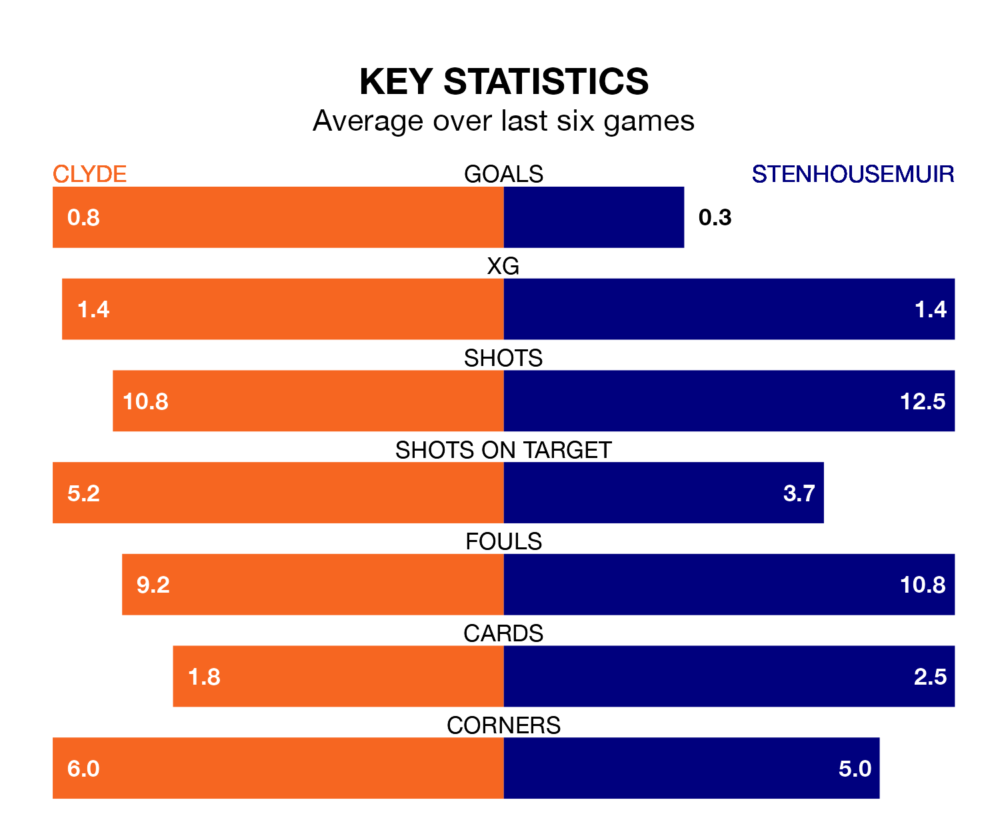

Relegation candidates Clyde face a challenge against high-flying Stenhousemuir at the Fountain of Youth Stadium on Saturday.
Clyde are rooted to the bottom of the League Two table, and have picked up seven wins and 10 draws in their 33 games to date.
The Warriors, meanwhile, are top of the standings with 66 points, having won 18 and drawn 12.
In Darren Jamieson, Stenhousemuir can rely on one of the league's safest pair of hands. He has kept 19 clean sheets in his 33 appearances this season, and no 'keeper has prevented the opposition scoring more often in League Two.
In Clyde's net, Brian Kinnear has three clean sheets in 10 games. He has conceded a goal every 82 minutes, 50% more often than the 124 minutes between goals for Darren Jamieson.
With 47 goals in 33 games so far this season, the Warriors are scoring more than average in the league with 1.4 goals per game. And they are conceding fewer than average, letting in 26 goals at a rate of 0.8 per game.
The Bully Wee, meanwhile, are below average scorers, with 1.2 goals per game, compared to a league average of 1.3. They have conceded 1.7 goals per game.
In the last 10 years, Clyde and Stenhousemuir have played each other on seven occasions. They won two each, and they drew three times.
On average, the Bully Wee scored 2.0 goals and the Warriors 1.7 in those matches.
Their last meeting was on February 24, when Clyde won 6-1 away.
The hosts are in mixed form in League Two, with two wins and a draw from their last six games.
With no wins and six draws over that period, the away team's form is slightly worse – they have taken six points from 18, compared to Clyde's seven.
Clyde's last match was on April 13, a 1-0 loss against Dumbarton.
Stenhousemuir drew 1-1 with Elgin City last time out, also on April 13, with Ross Taylor on the scoresheet.
Saturday's match will be refereed by Gavin Duncan, who has taken charge of three League Two games so far this season, issuing one red card and booking seven players. He has awarded two penalties.
The last Stenhousemuir game Duncan refereed was the 2-0 win away at Spartans on January 13. He is yet to oversee a match featuring Clyde this season.
Updated: 15:40 (UTC), 18/04/24